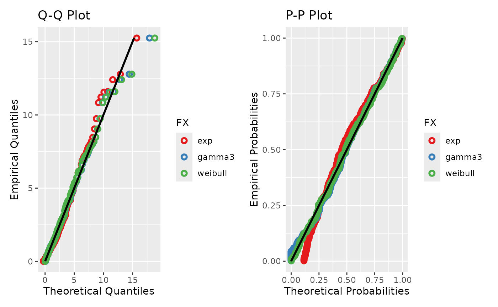

Fits a list of candidate distributions to a single time series
via the L-moments method. Each candidate is dispatched to its corresponding
fitlm_* function, which returns the fitted parameters, theoretical
L-moments, sample L-moments, and six goodness-of-fit metrics (MLE, CM, KS,
MSEquant, DiffOfMax, MeanDiffOf10Max). When diagnostic_plots = TRUE, Q-Q and P-P
comparison plots are produced with all candidates overlaid on a single panel,
using colour-coded points and a 1:1 reference line. An empty series or one with all values
below the zero threshold after filtering returns an NA placeholder
for every candidate.
Usage
fitlm_multi(
ts,
candidates,
ignore_zeros = FALSE,
zero_threshold = 0.01,
diagnostic_plots = TRUE,
order = NULL
)Arguments
- ts
An xts object containing the time series data.
- candidates
A character vector of distribution names to fit.
- ignore_zeros
A logical value, if
TRUEzeros will be ignored. Default isFALSE.- zero_threshold
The threshold below which values are considered zero. Default is 0.01.
- diagnostic_plots
A logical value controlling whether Q-Q and P-P diagnostic plots are produced. Default is
TRUE.- order
Optional named list mapping a candidate name to the vector of L-moment orders matched by its optimiser, e.g.
list(gengamma = 1:5, expweibull = 1:3). Only the numerically-fitted distributions (gengamma,gengamma_loc,burr,dagum,expweibull) accept it; entries for other candidates are ignored. Candidates not named keep their own default. DefaultNULL(every distribution uses its default).
Value
A list with components parameter_list (a named list of
per-candidate fit results, each containing Distribution,
Param, TheorLMom, DataLMom, and GoF),
GoF_summary (a data frame of GoF metrics with candidates as columns),
and, when diagnostic_plots = TRUE, diagnostics (a combined
Q-Q and P-P panel), QQplot, and PPplot.
Examples
# Daily precipitation-like data: gamma-distributed with zeros
x <- xts::xts(rgamma(365, shape = 0.8, scale = 3),
order.by = seq.Date(as.Date("2020-01-01"), by = "day", length.out = 365))
x[sample(1:365, 100)] <- 0
candidates <- c('exp', 'gamma3', 'weibull')
fits <- fitlm_multi(x, candidates = candidates, ignore_zeros = TRUE)
fits$diagnostics

fits$GoF_summary
#> exp gamma3 weibull
#> MLE 508.0435026 619.46052289 465.53313018
#> CM 0.2072796 0.03202756 0.01546384
#> KS 0.1145038 0.04504153 0.02364419
#> MSEquant 0.1094933 0.02714489 0.03487785
#> DiffOfMax -8.5180175 3.02488286 7.04031773
#> MeanDiffOf10Max 1.2045456 0.55540758 0.60125379